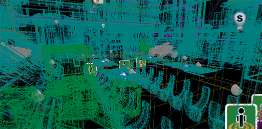

UDN
Search public documentation:
UnrealEditorPreferences
日本語訳
中国翻译
한국어
Interested in the Unreal Engine?
Visit the Unreal Technology site.
Looking for jobs and company info?
Check out the Epic games site.
Questions about support via UDN?
Contact the UDN Staff
中国翻译
한국어
Interested in the Unreal Engine?
Visit the Unreal Technology site.
Looking for jobs and company info?
Check out the Epic games site.
Questions about support via UDN?
Contact the UDN Staff
Unreal Editor Preferences
Overview
Viewport Rendering & Navigation
- Flight Camera Controls
- This setting determines whether the flight camera is used and how it is accessed. The flight camera uses the W, A, S, and D keys to dolly and pan the camera, similar to how standard FPS controls work. W and S dolly the camera in and out, while A and D pan, or strafe, the camera side to side. When active, this overrides any hotkeys using these controls, including toggling show flags.
Option Description Use WASD for Camera Controls The flight camera and WASD controls are always active. Use WASD Only When Right Mouse Button is Held The flight camera and WASD controls are only active when the RMB is pressed. Never Use WASD for Camera Controls The flight camera and WASD controls are never active. - Grab and Drag to Scroll Ortho Cameras
- If enabled, clicking the Left or Right Mouse Buttons and dragging the mouse in an orthographic viewport will scroll the camera. Essentially what this means in practice is when you click and drag the scene will move with the mouse. With this disabled, the scene moves opposite of the mouse.
- Zoom to Cursor Position
- If enabled, zooming in the orthographic viewports will be centered around the mouse cursor. When disabled, zooming is centered on the center of the viewport.
- Link Orthographic Viewport Movement
- If enabled, all orthographic viewports will be linked to focus on the same position. So moving the camera in one orthographic viewport will cause the other orthographic viewports to follow. When disabled, all viewports can be navigated independently.
- Resize Top and Bottom Viewports Together
- If enabled, the splitter between the left viewports and right viewports in a 2x2 split configuration will affect both the top and bottom viewports. When disabled, the splitter between the top viewports will only affect the top viewports and the splitter between the bottom viewports will only affect the bottom viewports.
- Aspect Ratio Constraint
- TODO
Option Description Maintain Y-Axis FOV Maintain X-Axis FOV Maintain Major Axis FOV - Enable Wireframe Halos (Perspective Views)
- If enabled, a halo post-process will be used around wireframe edges in perspective views. This makes it much easier to distinguish depth when viewing a perspective viewport in wireframe viewmode. 
- Perspective Viewports Default to Real Time
- If enabled, perspective viewports will always default to having realtime update enabled. This can potentially have a performance impact when working with complex levels in the editor.
- Use Camera Location from Play-In-Viewport
- If enabled, the viewport camera location and rotation is set to match that of Play-in-Viewport camera upon exiting.
- Auto-Updating BSP Visualization
- If enabled, BSP geometry will auto update in the viewport when a brush actor is modified. When disabled, geometry must be rebuilt to see any changes made to brush actors. Ctrl + Alt + U can be used to toggle this option.
 WARNING: Geometry still needs to be manually rebuild prior to playing a level.
WARNING: Geometry still needs to be manually rebuild prior to playing a level.
Selection & Transformation
- Highlight Objects Under Mouse Cursor
- If enabled, objects will be highlighted in viewports while hovering over them with the mouse cursor.
- Highlight Selected Objects With Brackets
- If enabled, selected objects will be highlighted by brackets in viewports regardless of viewmode.
- Use Absolute Translation
- If enabled, translation transformations are treated as absolute. When disabled, translations are considered relative to the prior location and the change is displayed in the status bar.
- Enable Combined Translate/Rotate Tool
- If enabled, the combined Translation and Rotate-Z tool is included after the Uniform Scale tool when cycling through the transformation widgets using the Spacebar.
- Clicking BSP Selects Brush
- If enabled, clicking on a BSP surface selects the brush and Ctrl + Shift + Click selects the surface. When disabled, the opposite is true; clicking selects the surface and Ctrl + Shift + Click selects the brush.
Content
- Preserve Actor Scale on Replace
- If enabled, the scale of the existing actor is retained by the new actor when replacing an actor. When disabled, the new actor's scale is reset to 1.0 regardless of the existing actor's scale.
- Prompt for Checkout on Package Modification
- If enabled, any time a package under source control is modified, a prompt will appear asking to check it out.
- Aut-Reimport Textures
- If enabled, source files for textures are monitored and textures are automatically re-imported when the source file is modified.
- Apply GFx Movie Changes to Play In Editor
- If enabled, Scaleform GFx user interface files will be monitored and modifications made while the editor is open will be applied when running the game in a Play In Editor session.
- Always Optimize Content for Mobile
- If enabled, additional optimizations will be applied to levels and assets in the editor to prepare them for mobile devices. Most notably, full PVRTC compression will be performed in place of the usual fast (lower quality) compression used when installing to a mobile device.
- Use Curves for Distributions
- If enabled, Distributions will use the curves in place of the baked lookup tables when being rendered in the editor.
- Load Simple Level At Startup
- If enabled, the map specified by the
SimpleMapNameproperty in the[UnrealEd.SimpleMap]section of the*Editor.inifile will be loaded when the editor is run. - Language
- Sets the language used for the UI elements of the editor.